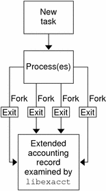

Previous
Previous
Extended Accounting (Overview)
By using the project and task facilities that are described in Chapter 2, Projects and Tasks (Overview) to label and separate workloads, you can monitor resource consumption by each workload. You can use the extended accounting subsystem to capture a detailed set of resource consumption statistics on both processes and tasks.
The following topics are covered in this chapter.
To begin using extended accounting, see How to Activate Extended Accounting for Processes, Tasks, and Flows.
Introduction to Extended Accounting
The extended accounting subsystem labels usage records with the project for which the work was done. You can also use extended accounting, in conjunction with the Internet Protocol Quality of Service (IPQoS) flow accounting module described in Chapter 38, Using Flow Accounting and Statistics Gathering (Tasks), in System Administration Guide: IP Services, to capture network flow information on a system.
Before you can apply resource management mechanisms, you must first be able to characterize the resource consumption demands that various workloads place on a system. The extended accounting facility in the Solaris Operating System provides a flexible way to record system and network resource consumption on a task or process basis, or on the basis of selectors provided by the IPQoS flowacct module. For more information, see ipqos(7IPP).
Unlike online monitoring tools, which enable you to measure system usage in real time, extended accounting enables you to examine historical usage. You can then make assessments of capacity requirements for future workloads.
With extended accounting data available, you can develop or purchase software for resource chargeback, workload monitoring, or capacity planning.
How Extended Accounting Works
The extended accounting facility in the Solaris Operating System uses a versioned, extensible file format to contain accounting data. Files that use this data format can be accessed or be created by using the API provided in the included library, libexacct (see libexacct(3LIB)). These files can then be analyzed on any platform with extended accounting enabled, and their data can be used for capacity planning and chargeback.
If extended accounting is active, statistics are gathered that can be examined by the libexacct API. libexacct allows examination of the exacct files either forward or backward. The API supports third-party files that are generated by libexacct as well as those files that are created by the kernel. There is a Practical Extraction and Report Language (Perl) interface to libexacct that enables you to develop customized reporting and extraction scripts. See Perl Interface to libexacct.
With extended accounting enabled, the task tracks the aggregate resource usage of its member processes. A task accounting record is written at task completion. Interim records on running processes and tasks can also be written. For more information on tasks, see Chapter 2, Projects and Tasks (Overview).
Figure 4-1 Task Tracking With Extended Accounting ActivatedExtensible Format
The extended accounting format is substantially more extensible than the SunOS legacy system accounting software format (see What is System Accounting? in System Administration Guide: Advanced Administration). Extended accounting permits accounting metrics to be added and removed from the system between releases, and even during system operation.
Note - Both extended accounting and legacy system accounting software can be active on your system at the same time.
exacct Records and Format
Routines that allow exacct records to be created serve two purposes.
To enable third-party exacct files to be created.
To enable the creation of tagging records to be embedded in the kernel accounting file by using the putacct system call (see getacct(2)).
Note - The putacct system call is also available from the Perl interface.
The format permits different forms of accounting records to be captured without requiring that every change be an explicit version change. Well-written applications that consume accounting data must ignore records they do not understand.
The libexacct library converts and produces files in the exacct format. This library is the only supported interface to exacct format files.
Note - The getacct, putacct, and wracct system calls do not apply to flows. The kernel creates flow records and writes them to the file when IPQoS flow accounting is configured.
Using Extended Accounting on a Solaris System with Zones Installed
The extended accounting subsystem collects and reports information for the entire system (including non-global zones) when run in the global zone. The global administrator can also determine resource consumption on a per-zone basis. See Extended Accounting on a Solaris System With Zones Installed for more information.